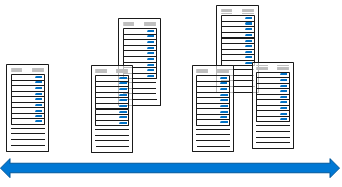

A robust virtual machine configuration includes support for scalability. Scalability allows throughput for a virtual machine in proportion to the availability of the associated hardware resources. A scalable virtual machine can handle increases in requests without adversely affecting response time and throughput. For most scaling operations, there are two implementation options: vertical and horizontal .
Things to know about vertical scaling
Vertical scaling, also known as scale up and scale down , involves increasing or decreasing the virtual machine size in response to a workload. Vertical scaling makes a virtual machine more (scale up) or less (scale down) powerful.

Here are some scenarios where using vertical scaling can be advantageous:
-
If you have a service built on a virtual machine that's under-utilized such as on the weekend, you can use vertical scaling to decrease the virtual machine size and reduce your monthly costs.
-
You can implement vertical scaling to increase your virtual machine size to support larger demand without having to create extra virtual machines.
Things to know about horizontal scaling
Horizontal scaling, also referred to as scale out and scale in , is used to adjust the number of virtual machines in your configuration to support the changing workload. When you implement horizontal scaling, there's an increase (scale out) or decrease (scale in) in the number of virtual machine instances.

Things to consider when using vertical and horizontal scaling
Review the following considerations regarding vertical and horizontal scaling. Think about which implementation might be required to support your company website.
-
Consider limitations . Generally speaking, horizontal scaling has fewer limitations than vertical scaling. A vertical scaling implementation depends on the availability of larger hardware, which quickly hits an upper limit and can vary by region. Vertical scaling also usually requires a virtual machine to stop and restart, which can temporarily limit access to applications or data.
-
Consider flexibility . When operating in the cloud, horizontal scaling is more flexible. A horizontal scaling implementation allows you to run potentially thousands of virtual machines to manage changes in workload and throughput.
-
Consider reprovisioning . Reprovisioning is the process of removing an existing virtual machine and replacing it with a new machine. A robust availability plan considers where reprovisioning might be required and plans for interruptions to service. If reprovisioning might be required, determine if any data needs to be maintained and migrated to the new machine.